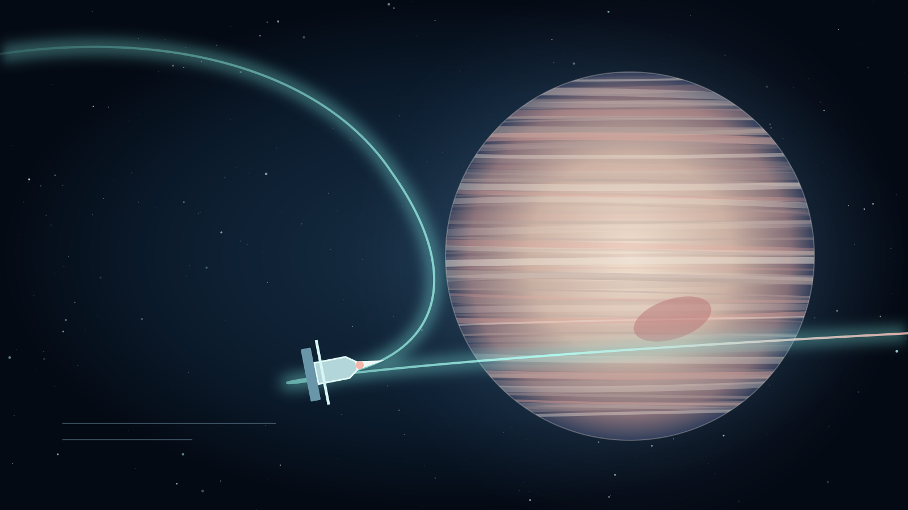
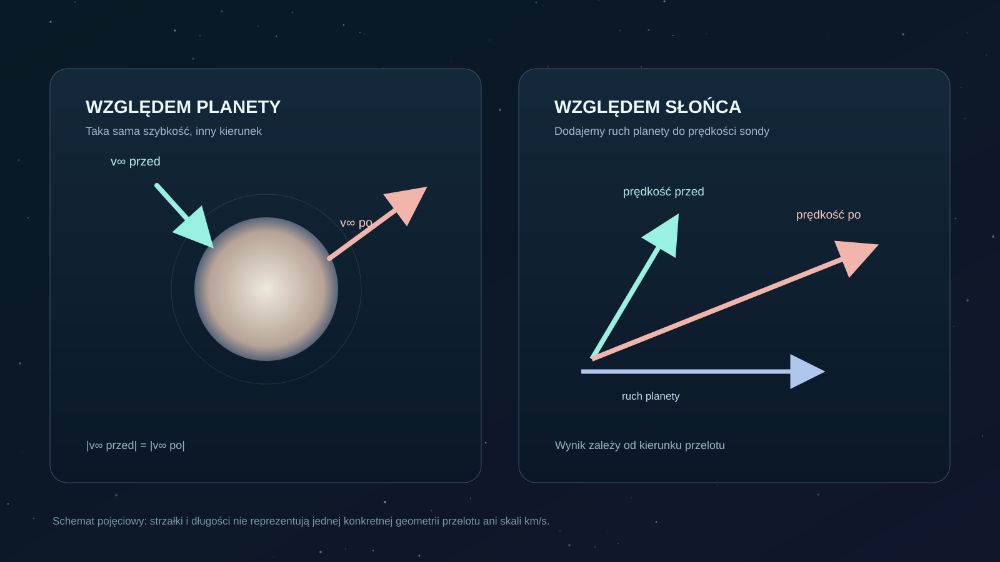
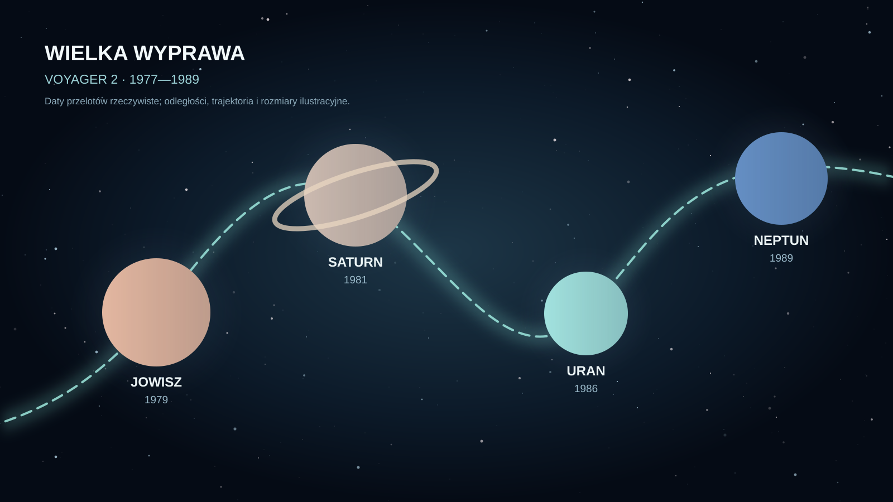
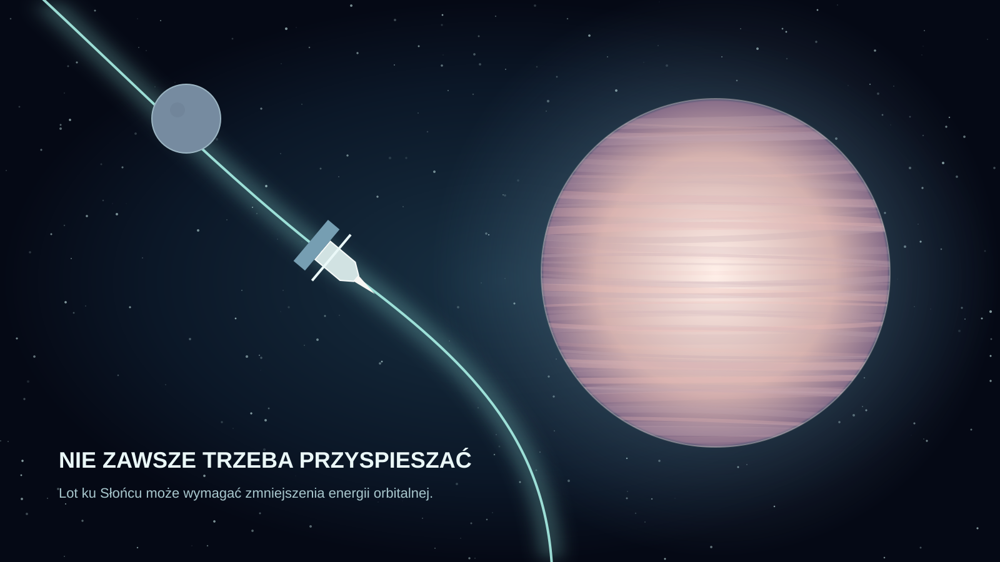

ROZDZIAŁ 13 · ENERGIA UKRYTA W PRZELOCIE
Jak ukraść prędkość Jowiszowi?
W przestrzeni międzyplanetarnej nie ma drogi, na której można się rozpędzić kołami. Sonda leci przez lata, a każda dodatkowa porcja paliwa waży i kosztuje. Tymczasem ogromna planeta pędzi po własnej orbicie. Wystarczy spotkać ją w odpowiedniej chwili — a jej grawitacja odmieni dalszą podróż.

Witaj w polu grawitacyjnym Jowisza. Autorska wizja artystyczna ATLAS SOLARIS. Świetlista trajektoria i rozmiary obiektów nie są pokazane w skali.
NAJWAŻNIEJSZE JEST TO, ŻE PLANETA SIĘ PORUSZA
W kosmosie można dostać impuls, nie uruchamiając silnika.
Wyobraź sobie sondę lecącą w stronę Jowisza. Z daleka planeta jest jasnym punktem. Z każdym dniem rośnie; w końcu w polu widzenia pojawiają się jej potężne pasy chmur. Sonda zbliża się do grawitacyjnej studni, zaczyna przyspieszać, mija planetę i rusza dalej.
Na pierwszy rzut oka brzmi to jak zwykła historia o przyspieszaniu. Ale gdyby planeta pozostawała nieruchoma i zaniedbalibyśmy inne oddziaływania, sonda w dalekiej odległości odleciałaby z taką samą szybkością względem planety, z jaką nadleciała. W drodze w dół studni grawitacyjnej przyspiesza, w drodze w górę zwalnia. Bilans energii w tym układzie pozostaje taki sam.
Istnieje jednak drugi uczestnik spotkania: ruch orbitalny planety wokół Słońca. Jowisz nie czeka nieruchomo. Krąży wokół Słońca z prędkością rzędu trzynastu kilometrów na sekundę. Jeśli sonda odpowiednio go minie, jej kierunek ruchu względem planety się zmieni. Gdy nowy wektor dodamy do prędkości poruszającego się Jowisza, szybkość sondy względem Słońca może wzrosnąć.
Grawitacja zakrzywia drogę sondy. Ruch planety zmienia wynik w układzie Słońca.
DLACZEGO DWA POMIARY MOGĄ BYĆ JEDNOCZEŚNIE PRAWDZIWE?
Z perspektywy planety — ta sama szybkość. Z perspektywy Słońca — inna historia.
Astronom opisujący sondę w układzie planety mierzy jej prędkość na wejściu i wyjściu z daleka od globu. W idealnym przelocie bez napędu wartość tej prędkości, oznaczana v∞, przed i po spotkaniu jest taka sama. Zmienia się jednak kierunek ruchu.
Drugi astronom patrzy na to samo zdarzenie z układu Słońca. Dodaje do wektora sondy prędkość planety. Jeżeli po zakręcie sonda porusza się bardziej zgodnie z ruchem planety, jej szybkość heliocentryczna rośnie. Jeśli zwrot jest przeciwny, może się zmniejszyć.
To nie jest tworzenie energii z niczego. Podczas spotkania energia i pęd są wymieniane pomiędzy planetą i sondą. Zmiana ruchu planety jest ekstremalnie mała — jej masa jest bowiem ogromna w porównaniu z masą sondy.

Jedno spotkanie nie musi dawać tego samego odczytu prędkości. Schemat pokazuje zasadę; strzałki i ich długości nie są rysowane w skali jednego konkretnego przelotu.
To dodawanie wektorowe. Samo dodanie dwóch liczb nie wystarcza; liczą się także kierunki.
PLANETA NIE JEST MAGNETYCZNYM HAKIEM
Jak mocno można zakręcić bez kropli paliwa?
O sile zakrzywienia toru sondy decydują przede wszystkim trzy wielkości. Pierwsza to masa planety: im silniejsze jej przyciąganie, tym większe może być odchylenie. Druga to prędkość nadlatującej sondy względem planety: bardzo szybka sonda zwykle skręca słabiej. Trzecia to odległość najbliższego podejścia liczona od środka planety.
Nie możemy zbliżyć się dowolnie. Planeta ma promień, niektóre planety — atmosferę, wokół mogą krążyć księżyce, a w pobliżu Jowisza czy Saturna występują obszary silnego promieniowania. Każde spotkanie musi być dokładnie zaplanowane.
W modelu idealnego przelotu hiperbolicznego astronomowie wiążą kąt skrętu δ z parametrem grawitacyjnym μ = GM, najbliższym podejściem rp i szybkością v∞. To przybliżenie znakomicie wyjaśnia zasadę manewru — choć nie zastępuje rzeczywistej nawigacji wielociałowej.
rp to odległość od środka planety w punkcie najbliższego przelotu. Kąt opisuje zmianę kierunku asymptotycznej prędkości sondy względem planety.
CZTERY OLBRZYMY, JEDNA SONDA
Gdy planety stały się kolejnymi drzwiami do kosmosu.
W latach siedemdziesiątych XX wieku naukowcy dostrzegli wyjątkowo korzystną konfigurację planet zewnętrznych. Dzięki odpowiednim spotkaniom grawitacyjnym Voyager 2 mógł dotrzeć kolejno do Jowisza, Saturna, Urana i Neptuna — bez ogromnych impulsów rakietowych potrzebnych do każdej zmiany trajektorii.
Sonda wystartowała 20 sierpnia 1977 roku. Minęła Jowisza 9 lipca 1979 roku, Saturna 25 sierpnia 1981 roku, Urana 24 stycznia 1986 roku oraz Neptuna 25 sierpnia 1989 roku. Każde spotkanie było jednocześnie naukową wizytą i starannie wycelowanym zakrętem ku następnym odkryciom.
NASA podaje, że asysty pozwoliły skrócić podróż do Neptuna z około 30 do 12 lat. To jedna z najpiękniejszych odpowiedzi na pytanie, dlaczego geometria potrafi być w astronautyce równie ważna jak moc silnika.

Voyager 2: cztery spotkania, które otworzyły drogę na obrzeża Układu Słonecznego. Daty przelotów są historyczne; orbity, rozmiary i trajektoria mają charakter ilustracyjny.
Voyager 2 opuszcza Ziemię.
Pierwszy wielki zwrot.
Nowy kierunek ku Uranowi.
Historyczny przelot.
Ostatnie spotkanie z planetą.
TO NAJBARDZIEJ NIEINTUICYJNA CZĘŚĆ HISTORII
Aby polecieć bliżej Słońca, trzeba czasem zwolnić.
Na Ziemi intuicja mówi, że do bliższego celu należy ruszyć w jego stronę. Ale Ziemia krąży wokół Słońca z szybkością około 30 kilometrów na sekundę. Sonda wystrzelona z Ziemi dziedziczy znaczną część jej ruchu orbitalnego. Żeby zejść na orbitę znacznie bliższą Słońcu, musi zwykle zmniejszyć energię heliocentryczną.
Tu asysta działa w przeciwną stronę: odpowiednio skierowany przelot może odebrać sondzie część energii orbitalnej względem Słońca. MESSENGER wykorzystał przelot obok Ziemi, dwa spotkania z Wenus i trzy spotkania z Merkurym w drodze do jego orbity. Parker Solar Probe korzystała z Wenus, aby coraz bardziej zbliżać się do Słońca.
Asysta nie jest więc po prostu „dopalaczem”. To narzędzie do świadomej wymiany energii i zmiany kierunku lotu. Ta sama planeta może pomóc polecieć dalej albo głębiej do wnętrza Układu Słonecznego.

Nie zawsze potrzebne jest przyspieszenie. Artystyczna ilustracja hamowania heliocentrycznego; nie jest odwzorowaniem trajektorii konkretnej misji.
RAKIETA NIE MUSI ROBIĆ WSZYSTKIEGO SAMA
Dlaczego inżynierowie wolą spotkanie od dodatkowego paliwa?
Wyobraź sobie ciężki statek z instrumentami, anteną i osłonami. Każda dodatkowa porcja paliwa oznacza większą masę, a większa masa może wymagać jeszcze większego wysiłku przy starcie i w trakcie lotu. Dlatego trasa misji jest częścią jej projektu, a nie tylko kreską na mapie.
Cassini, sonda skierowana do Saturna, po starcie w 1997 roku wykonała dwie asysty przy Wenus, jedną przy Ziemi i jedną przy Jowiszu. Ta złożona trasa pozwoliła dostarczyć dużą sondę do odległego celu, mimo ograniczeń dostępnej energii startowej.
Nie istnieją jednak darmowe podróże w sensie dosłownym. Za asysty płaci się czasem lotu, koniecznością dokładnego wycelowania w poruszającą się planetę i ryzykiem związanym z bliskim przelotem. Zysk jest ogromny: możliwość realizacji misji, która przy innej trasie wymagałaby znacznie większych manewrów silnikowych.
JEDNA PLANETA. DWA MOŻLIWE WYNIKI.
Ile prędkości można zyskać — albo oddać?
Wybierz planetę, szybkość zbliżania, wysokość przelotu i kierunek zakrętu. Idealizowany model obliczy kąt odchylenia i prędkości względem Słońca. Rysunek pokazuje wektory, a nie ephemerydy rzeczywistej sondy.
Wybierz parametry, aby poznać wynik przelotu.
Model jest płaski i nie używa napędu. Oblicza kąt przelotu z μ, v∞ i rp = Rplanety + h. W układzie planety v∞ ma wartość stałą przed i po manewrze. Dla wybranej geometrii ustawiamy początkowy wektor sondy (0, −v∞), a wychodzący obracamy o ±δ; następnie dodajemy wektor ruchu planety (U, 0). To ilustracja zasady patched-conics, a nie rekonstrukcja konkretnej misji. W szczególności pomija grawitację Słońca podczas spotkania, ruch po orbitach eliptycznych, księżyce, atmosfery, promieniowanie i ograniczenia bezpieczeństwa. Zmiana szybkości heliocentrycznej nie jest równoznaczna z impulsem Δv wymaganym od silnika.
TO LABORATORIUM JUŻ ZNASZ — NICZEGO NIE USUWAMY
A teraz zajrzyj do centrum sterowania.
Nowy kalkulator wyjaśnia zasadę wektorów i energii. Wcześniejsze laboratorium etapu 13 nadal pozwala śledzić asysty w większej symulacji Układu Słonecznego. Uruchomi się dopiero po kliknięciu, dzięki czemu nie obciąża strony podczas czytania.
OPOWIEŚĆ O NIEWIDZIALNEJ WYMIANIE
Wszystko zależy od tego, gdzie i kiedy się spotkacie.
Patrząc na Jowisza przez teleskop, widzimy pasy chmur i księżyce. Konstruktor sondy widzi jeszcze coś innego: olbrzymie ciało w ruchu, które może stać się kolejnym rozdziałem misji. Ta sama planeta potrafi pomóc przyspieszyć ku odległym światom albo skierować statek w zupełnie inną stronę.
Asysta grawitacyjna nie oszukuje praw fizyki. Wykorzystuje je z taką precyzją, że po wieloletnim locie niewielka sonda przechodzi w odpowiedniej odległości od potężnej planety, aby polecieć tam, gdzie sama rakieta nie dałaby rady.
Największym wynalazkiem kosmicznej podróży bywa nie silnik. Bywa nim dobrze wybrana droga.
Tekst opiera się na materiałach NASA/JPL oraz ESA. Plansze I–IV są autorskimi ilustracjami ATLAS SOLARIS, a laboratorium stanowi idealizowaną wizualizację fizyki manewru.